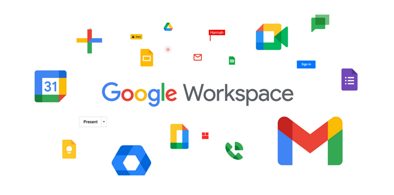
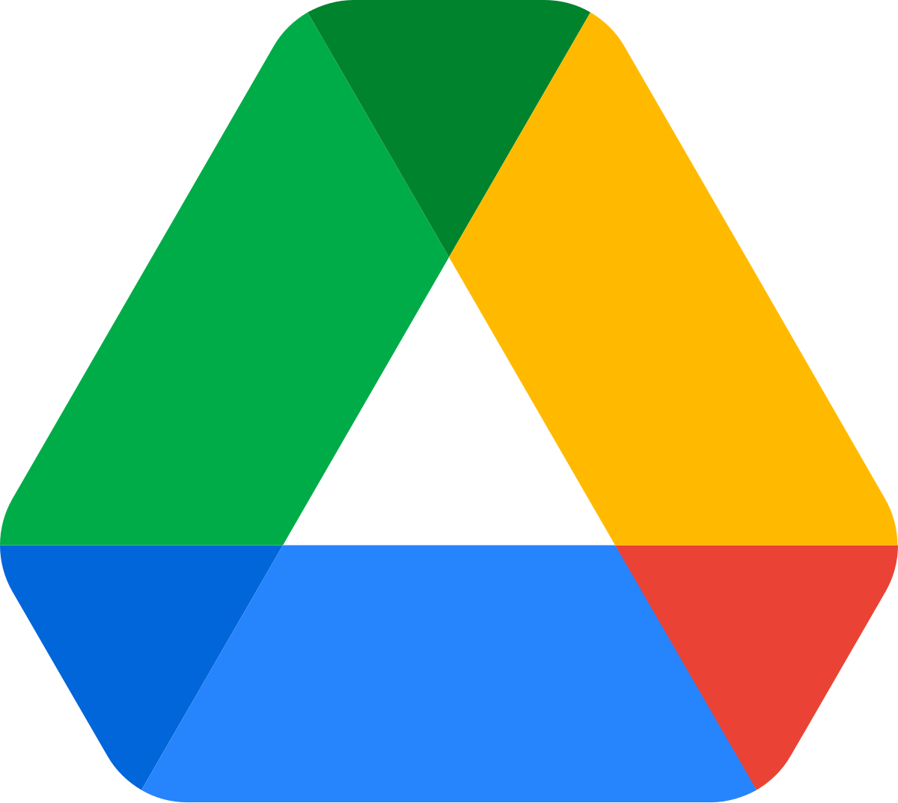
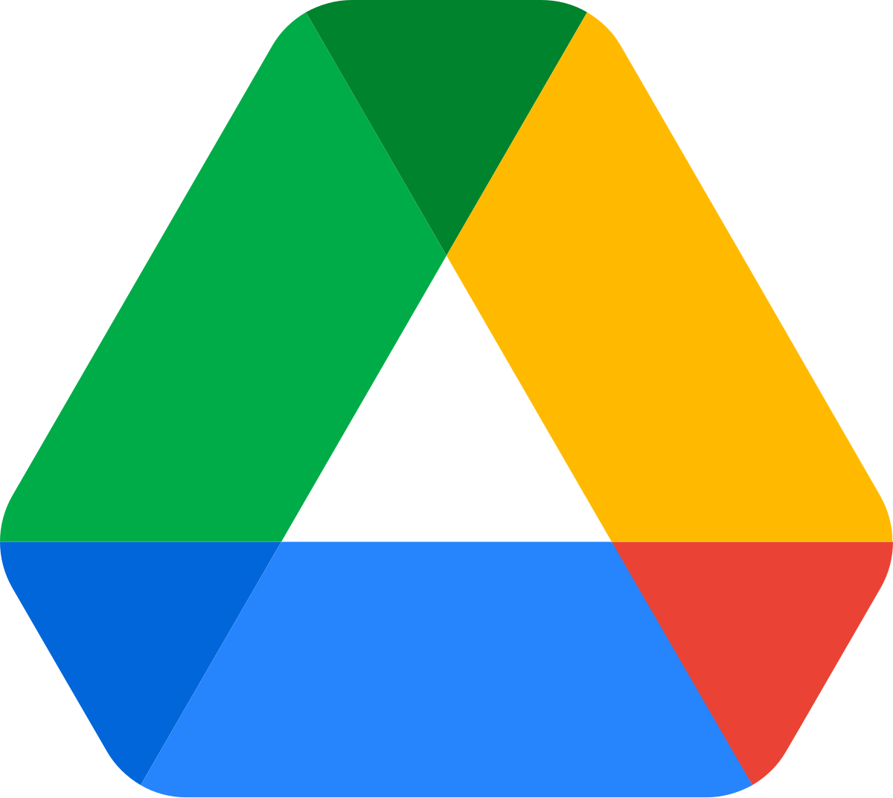
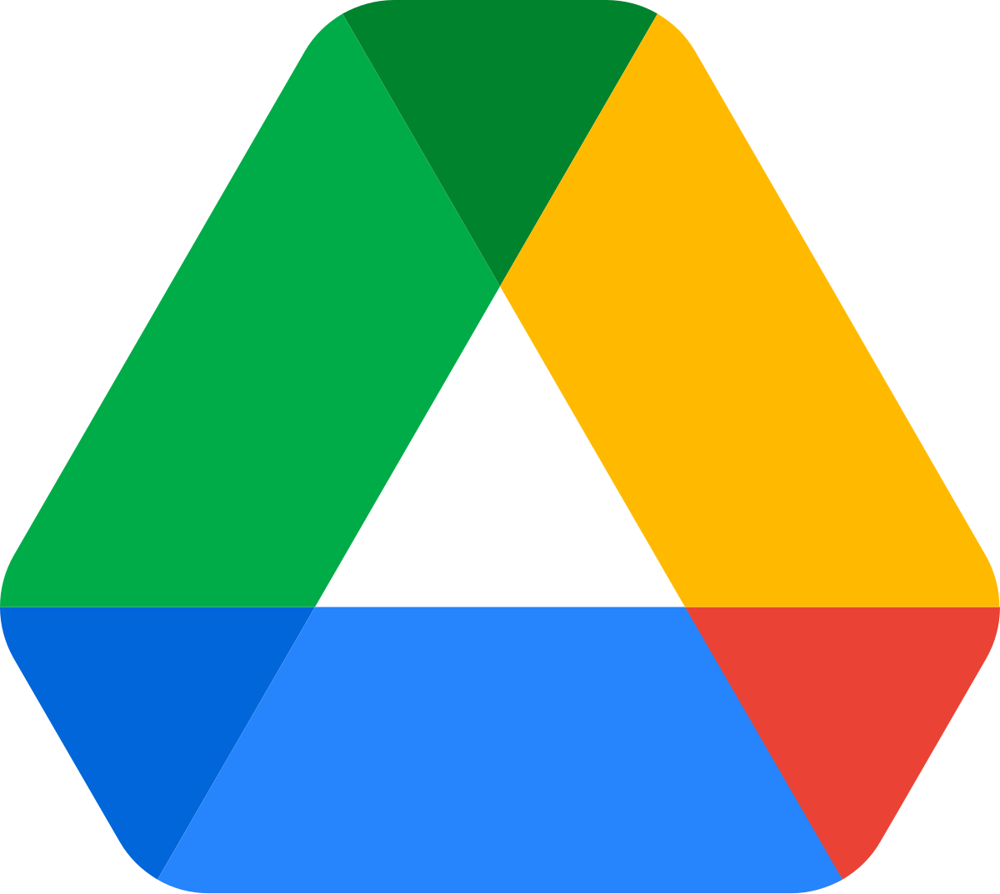

Что из себя представляет Google в 2024 - 2025 году?
Google LLC — транснациональная корпорация из США в составе холдинга Alphabet, инвестирующая в интернет-поиск, облачные вычисления и рекламные технологии.
Google поддерживает и разрабатывает многочисленные интернет-сервисы и продукты и получает прибыль в первую очередь от рекламы через свою программу Ads. Она считается одной из технологических компаний «большой четверки» наряду с Amazon, Apple и Microsoft.
Google управляет более чем миллионом серверов в центрах обработки данных по всему миру, ежедневно обрабатывает более миллиарда поисковых запросов и 24 петабайт пользовательских данных. Быстрый рост Google с момента её основания привёл к появлению большого числа продуктов, не связанных непосредственно с главным продуктом компании — поисковой системой. У Google есть такие онлайн-продукты как почтовый сервис Gmail, социальная сеть Google+ (закрыт 2 апреля 2019 года). У компании есть и настольные продукты, такие как браузер Google Chrome, программа для работы с фотографиями Picasa (закрыта с 1 мая 2016 года, на смену пришел сервис Google Фото) и программа мгновенного обмена сообщениями Hangouts. Кроме того, Google ведёт разработку мобильной операционной системы Android, используемой на большом количестве смартфонов, а также операционной системы Google Chrome OS и устройства Google Glass.
По данным Alexa, основной сайт Google — google.com — является самым посещаемым сайтом Интернета, а многочисленные международные сайты Google (google.co.in, google.co.uk и т. д.) входят в первую сотню по посещаемости, как и несколько других сайтов сервисов Google — YouTube, Blogger и Orkut. В мае 2011 года количество уникальных посетителей сайтов Google за месяц впервые превысило 1 миллиард человек.
Штаб-квартира компании Google Inc. - Googleplex расположена в городе Маунтин-Вью, штат Калифорния, на территории Кремниевой долины.
В 1995 году в Стэнфордском университете Сергей Брин встретился с аспирантом-математиком — Ларри Пейджем, вместе с которым в 1998 году они основали компанию Google. Первоначально они яростно спорили при обсуждении любых научных тем, но затем подружились и объединились для создания поисковой системы для своего кампуса. Вместе они написали научную работу «Анатомия системы крупномасштабного гипертекстного Интернет-поиска» (The Anatomy of a Large-Scale Hypertextual Web Search Engine), в которой, как считается, содержится прообраз их будущей сверхуспешной идеи. Брин и Пейдж доказали состоятельность их идеи на университетской поисковой машине google.stanford.edu, разработав её механизм в соответствии с новыми принципами.
15 сентября 1997 года был зарегистрирован домен google.com. Последовали попытки развития идеи и превращения её в бизнес. Со временем проект покинул стены университета и сумел собрать инвестиции для дальнейшего развития.
Совместное дело росло, приносило прибыль и даже продемонстрировало завидную устойчивость в момент краха доткомов, когда разорились сотни других компаний. В 2004 году имена основателей были названы журналом Forbes в списке миллиардеров.
Ларри Пейдж и Сергей Брин
Первые шаги
Первое финансирование Google получил в августе 1998 года в размере 100 тыс. долларов США от Энди Бехтольштейма, одного из основателей ныне упразднённой Sun Microsystems. Официально компания Google была зарегистрирована 4 сентября 1998 в гараже друга в Менло-Парк, штат Калифорния.
Имя «Google» произошло от слова «гугол», означающего цифру 1 со ста нолями (хотя Энид Блайтон использовала фразу «Google Bun» в The Magic Faraway Tree (опубликован 1943)). Всё чаще употребляемый в повседневном языке глагол «to google» (ru: «гуглить») был в 2006 году добавлен в Оксфордский английский словарь как обозначающий «использование Google для поиска в интернете».
К концу 1998 года Google проиндексировал около 60 миллионов страниц. На главной странице по-прежнему была метка «BETA», но поисковик уже начал получать положительные отзывы: в статье на Salon.com утверждали, что результаты поиска Google были лучше, чем у других поисковиков (Hotbot, Excite.com), и хвалили Google за бо́льшие технологические инновации, чем у перегруженных сайтов-порталов (например Yahoo!, Excite.com, Lycos, Netscap’s Netcenter, AOL.com, Go.com и MSN.com), которых отмечали во время растущего пузыря доткома как «будущее сети», особенно инвесторы фондового рынка.
В марте 1999 года компания переехала в отделение на 165 Университетский авеню в город Пало-Альто, где располагались другие технологические стартапы Кремниевой долины. После быстрого карьерного роста компания арендовала комплекс зданий в Маунтин-Вью в 1600 Amphitheatre Parkway от Silicon Graphics (SGI) в 1999 году, где и остаётся сегодня; комплекс с тех пор стал известен как Googleplex (игра слов Googleplex — искажённое название числа googolplex, равного 1 с гуголом нулей). В 2006 году Google купила имущество от SGI за 319 млн долл. США.
Поиск Google привлекает растущее число Интернет-пользователей своим простым интерфейсом. В 2000 году Google начала продажу рекламы, связанную с ключевыми словами поиска. Реклама была текстовой, не загромождая дизайн страницы и не уменьшая скорость её загрузки. Ключевые слова продавались на основе сочетания цены предложения и количества кликов, цены начинались от 0,05 $ за клик. Эта модель продажи рекламы по ключевым словам была впервые предложена Goto.com (позднее переименован в Overture Services, а затем приобретён Yahoo! и после ребрендинга стал Yahoo! Search Marketing). В отличие от многих конкурентов, Google удалось постепенно выйти в новый рынок Интернета.
В 1998 Google было необходимо выделиться среди конкурентов, поэтому был разработан алгоритм PageRank.
PageRank – это сердцевина поисковой системы Google, которая позволила ей выделиться среди конкурентов и стать лидером отрасли. Этот алгоритм оценивает важность веб-страницы на основе количества и качества ссылок, ведущих на нее. PageRank стал основой для поисковой оптимизации (SEO), которая позволяет владельцам сайтов повышать свои позиции в результатах поиска.
Развитие других алгоритмов: PageRank послужил отправной точкой для создания более сложных алгоритмов, учитывающих не только ссылки, но и другие факторы, такие как поведение пользователей, качество контента и мобильность.
Изменение интернет-маркетинга: Благодаря PageRank, контекстная реклама стала одним из самых эффективных инструментов онлайн-маркетинга
Сервисы Google
Помимо поиска у Google также есть много различных сервисов, которыми мы пользуемся каждый день. Главное преимущество служб Google заключается в том, что все они объединены и держатся на одном аккаунте — аккаунте Google. Так, нужно только один раз зарегистрироваться для возможности пользоваться персонализированным веб-поиском, электронной почтой, облачным хранилищем, социальной сетью и многим другим. Сайтов, сравнимых с Google по числу сервисов, довольно мало. Одними из самых популярных сервисов являются YouTube, Gmail, Google Maps и Google Drive. Как же они появились?

Youtube
YouTube был создан в феврале 2005 года Стивом Ченом, Чадом Хёрдли и Джаведом Каримом — тремя бывшими работниками PayPal в Сан-Бруно, Калифорния. Они использовали технологию Flash Video, позволяющую получить относительно хорошее качество записи при небольшом объёме передаваемых данных.
Самое первое видео — 19-секундный ролик любительской съёмки Джаведа Карима в зоопарке Сан-Диего — было размещено на YouTube 23 апреля 2005 года в 20:27 по местному времени.
В мае 2005 года бета-версия сервиса открылась для широкой публики. Всего через шесть месяцев аудитория ресурса достигла двух миллионов зрителей в день. К марту 2006 года на сайт было загружено более 25 миллионов видео.
В ноябре 2006 года была завершена покупка YouTube компанией Google за 1,65 миллиарда долларов. До покупки YouTube у Google был сервис схожей направленности — Google Видео. Представители Google не стали закрывать его, а использовали его как место поиска видео по всем видеохостинговым сайтам. В настоящее время поиск Google Video включает и YouTube.
Gmail
Пол Бакхайт, 23-й сотрудник Google, начал работу над новой почтовой службой Gmail летом 2001 года. Разработка проекта держалась в тайне вплоть до начала закрытого бета-тестирования 1 апреля 2004 года. По сравнению с другими почтовыми службами того времени, сервис Gmail был оснащён революционным интерфейсом на основе технологии Ajax и предлагал значительно больший объём почтового ящика (до 1 Гб свободного места, тогда как конкурирующие бесплатные почтовые сервисы редко позволяли хранить более 10 Мб данных).
Доступ в бета-тестирование осуществлялся с помощью системы приглашений. Изначально раздав 1000 инвайтов, компания Google разрешила каждому пригласить всего несколько друзей. Вследствие чего, иметь почтовый ящик на Gmail означало быть причастным к элитарному клубу. Лишь спустя 3 года, в 2007 году, сервис был открыт для всех желающих, а уже к 2012 году общее количество пользователей выросло до 425 миллионов.
Google Maps
Google Maps – это один из самых популярных и удобных инструментов для навигации и поиска информации о различных местах по всему миру. Но как же появился этот сервис?
Корни Google Maps уходят в начало 2000-х годов. Компания Google, стремясь расширить свои границы и предложить пользователям новые возможности, приобрела несколько небольших компаний, занимавшихся разработкой картографических технологий. Среди них были Keyhole, Where2 и Zipdash.
Keyhole была самой крупной из приобретенных компаний. Ее технология позволяла создавать трехмерные модели земной поверхности на основе спутниковых снимков. Именно эта технология легла в основу базовой функциональности Google Maps.
Where2 и Zipdash внесли свой вклад в развитие мобильной версии Google Maps и системы оценки задержек в реальном времени
2004 год: Google объединяет технологии приобретенных компаний и запускает бета-версию Google Maps.
2005 год: Сервис становится доступен для широкой публики и быстро завоевывает популярность.
С момента запуска Google Maps постоянно развивается и расширяет свои возможности. Появляются новые функции, такие как Street View, пробки в реальном времени, исторические карты и многое другое.
Google Drive
Google Диск – это облачное хранилище файлов, которое позволяет хранить, синхронизировать и совместно использовать файлы различных форматов. Но как же появился этот удобный сервис?
Предыстория:
Google Документы: До появления Google Диска существовал сервис Google Документы, который позволял создавать и редактировать текстовые документы, таблицы и презентации онлайн. Однако, у него не было полноценных функций облачного хранилища.
Покупки и разработки: Google активно приобретал и разрабатывал технологии, связанные с хранением и обработкой данных. Это позволило создать надежную и масштабируемую платформу для будущего облачного хранилища.
Запуск Google Диска:
Апрель 2012 года: Официально был представлен Google Диск. Изначально пользователям предоставлялось 5 ГБ бесплатного пространства для хранения файлов.
Интеграция с другими сервисами Google: Диск был тесно интегрирован с другими сервисами Google, такими как Документы, Таблицы и Презентации. Это позволило пользователям легко создавать, редактировать и хранить все свои файлы в одном месте.
Мобильные приложения: Вскоре после запуска появились мобильные приложения для Android и iOS, что сделало доступ к файлам еще более удобным.

Перспективы развития компании
В 2025 году Google работает над ускорением внедрения технологий искусственного интеллекта (ИИ) и укреплением позиций на рынке в условиях растущей конкуренции и регуляторного давления.
Их основными проектами для развития будут такие проекты, как:
Gemini: Продвинутая ИИ-платформа, цель — охватить 500 млн пользователей к концу 2025 года.
Project Astra: Универсальный ИИ-помощник, работающий на любых устройствах.
Project Mariner: Интеллектуальный помощник для браузера Chrome, автоматизирующий рутинные задачи.
Jules: Инструмент для разработчиков, ускоряющий работу над проектами.
Google фокусируется на качестве продуктов, чтобы оставаться лучшими в своем классе, развивает ИИ-решения для массового рынка и интегрирует эти технологии в существующие сервисы.
2025 год станет решающим для Google, с акцентом на инновации, конкурентоспособность и адаптацию к изменениям в технологической и регуляторной среде.


 
